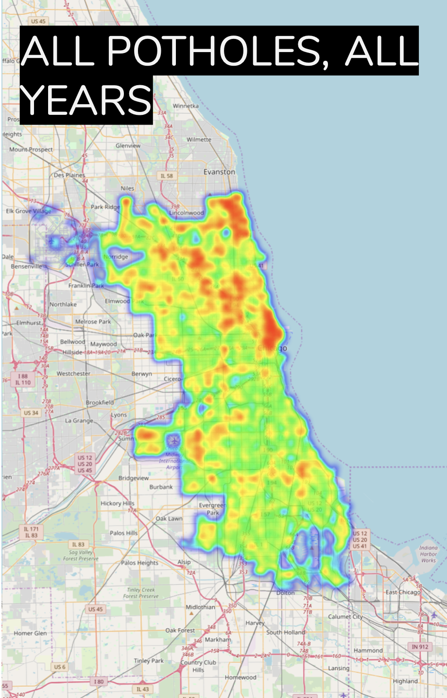
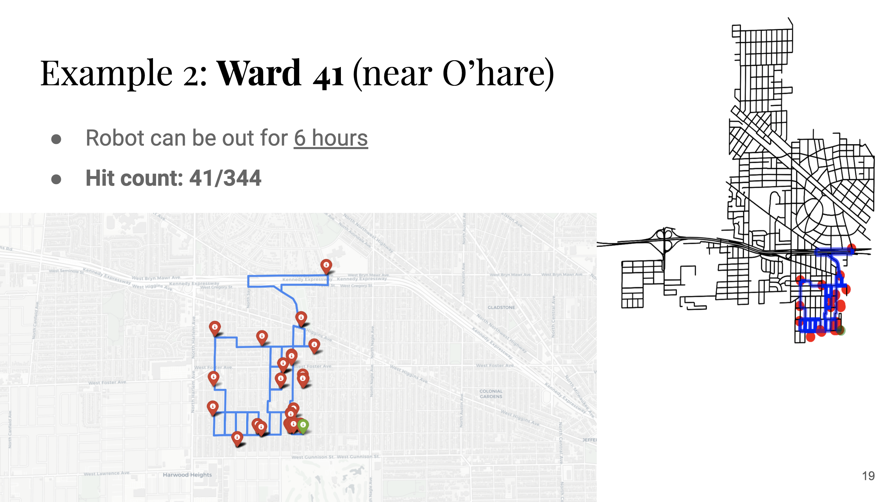
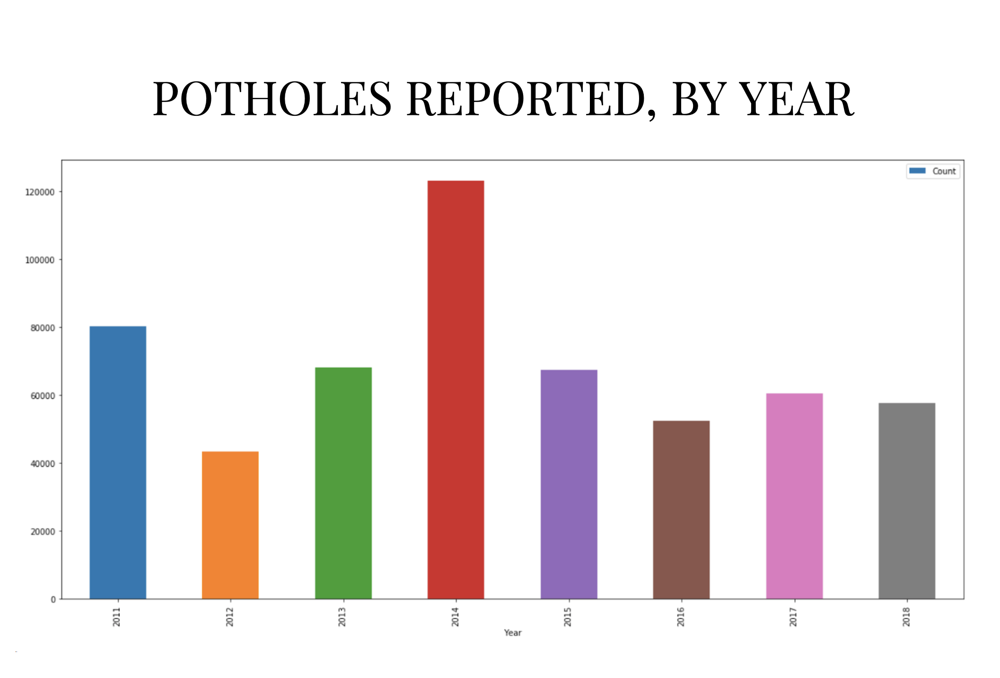

Chicago Pothole Project
The Chicago pothole project was an effort to explain where the potholes are in Chicago, why they happen where they happen, and how well they are addressed when they happen. In addition to this, another aim of the project was to create a routing algorithm amongst potholes in preparation for an autonomous pothole filler. Below are some examples of the data analysis done, and an example of an output route to route between the potholes. Full details can be found at this website
  